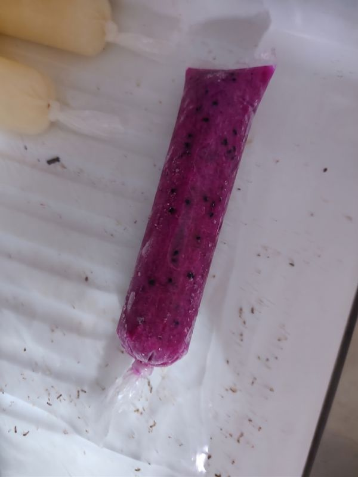
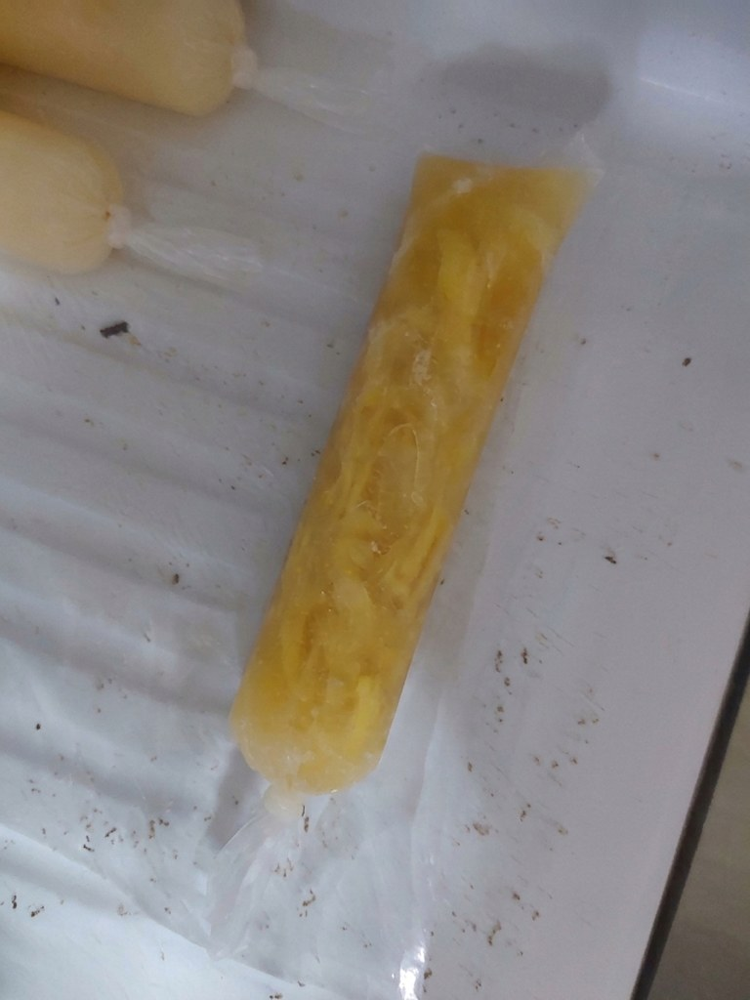
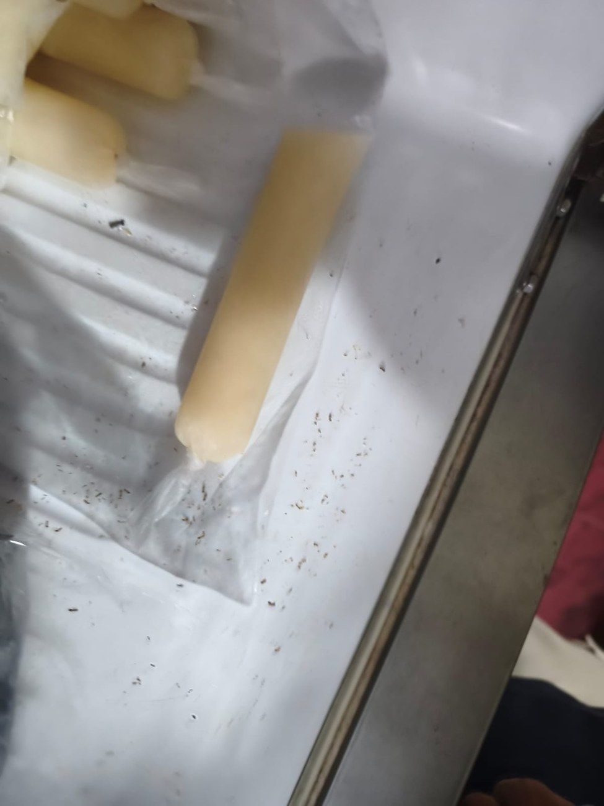
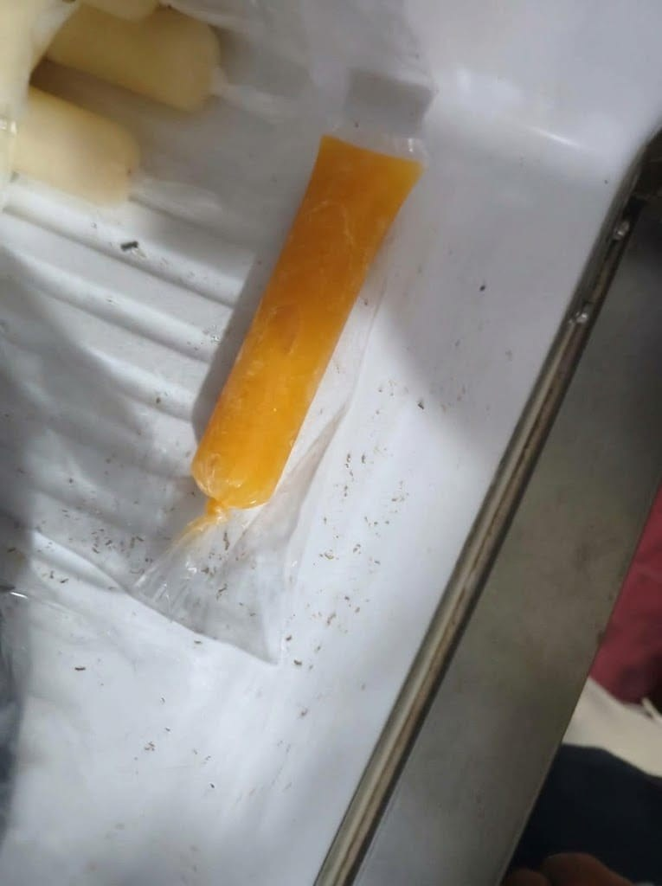
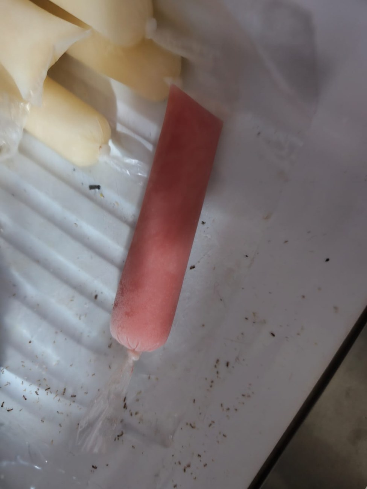
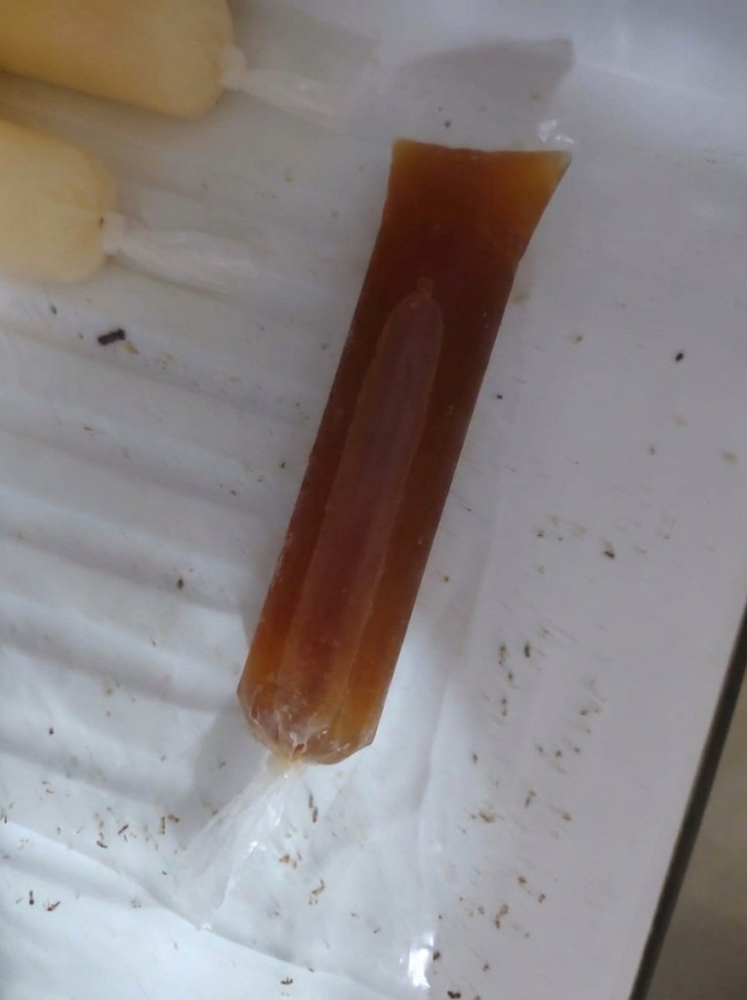

★ Favorit
✓ Tersedia
Es Buah Naga Asli
Rp 1.000Olahan buah naga merah asli pilihan dengan gula pasir murni yang manis alami dan segar (Best Seller).
Pesan Pre-Order →Selamat datang di website katalog digital UMKM Es Buah Ibu Uum milik Ibu Uum Siti Umroh. Pilih 6 varian es buah dan es teh dalam kemasan plastik ikat seharga Rp 1.000 per porsi, lalu pesan lebih dulu (Pre-Order) agar tidak kehabisan.


Rp 1.000
Mangkubumi, Tasikmalaya
Setiap hari, Bu Uum berbelanja buah dan gula untuk membuat es di rumahnya. Di lapak, ia melayani sendiri anak-anak dan warga yang mampir membeli es buah atau es teh manis dalam plastik ikat.
Tersedia 6 varian rasa dari olahan buah segar pilihan dan gula pasir murni dalam kemasan plastik ikat.
Olahan buah naga merah asli pilihan dengan gula pasir murni yang manis alami dan segar (Best Seller).
Pesan Pre-Order →Olahan buah nangka matang pohon yang wangi dan manis legit alami dalam kemasan es plastik ikat.
Pesan Pre-Order →
Es Buah ✓ TersediaPerpaduan daging buah sirsak segar dengan rasa manis asam yang menyegarkan di setiap gigitan.
Pesan Pre-Order →
★ Favorit ✓ TersediaOlahan buah mangga harum manis segar dengan tekstur lembut dan rasa manis favorit anak-anak maupun dewasa.
Pesan Pre-Order →
Es Buah ✓ TersediaJus jambu biji merah pilihan yang lembut, kaya vitamin, dan dibekukan dalam kemasan plastik ikat praktis.
Pesan Pre-Order →
Es Teh ✓ TersediaSeduhan teh wangi pilihan dengan gula pasir asli yang manis pas dan menyegarkan dahaga di siang hari.
Pesan Pre-Order →Pilih “Pesan Pre-Order” untuk menambah satu porsi. Kamu bisa menambah rasa lain dan mengubah jumlahnya di formulir.
Semua varian es buah dan es teh dijual dengan harga seragam yang sangat terjangkau, baik untuk pembelian eceran langsung di lapak maupun pesanan banyak (acara RT/pengajian).
Pesan Sekarang| Menu Varian | Kemasan | Harga |
|---|---|---|
| Es Buah Naga Asli | Plastik Ikat | Rp 1.000 / porsi |
| Es Nangka Manis Legit | Plastik Ikat | Rp 1.000 / porsi |
| Es Sirsak Asli Segar | Plastik Ikat | Rp 1.000 / porsi |
| Es Mangga Harum Manis | Plastik Ikat | Rp 1.000 / porsi |
| Es Jambu Merah Segar | Plastik Ikat | Rp 1.000 / porsi |
| Es Teh Manis Segar | Plastik Ikat | Rp 1.000 / porsi |
Foto dokumentasi asli kemasan es lilin buah dan es teh di kulkas penyimpanan lapak Ibu Uum.
Komitmen Ibu Uum Siti Umroh dalam menyajikan es buah rumahan berkualitas bagi warga sekitar dan luar kampung.
Dibuat setiap hari dari buah naga, nangka, sirsak, mangga, jambu merah segar serta gula pasir murni tanpa pemanis buatan.
Harga sangat ramah di kantong anak-anak maupun warga dengan porsi kemasan plastik ikat yang dingin dan menyegarkan.
Pelanggan luar kampung bisa pesan lebih dulu lewat form website agar pesanan disisihkan oleh Ibu Uum sebelum kehabisan.
Pilih rasa dan jumlahnya, lalu kirim satu pesan WhatsApp ke Bu Uum. Untuk bertanya langsung, ketuk nomor WhatsApp di bawah.